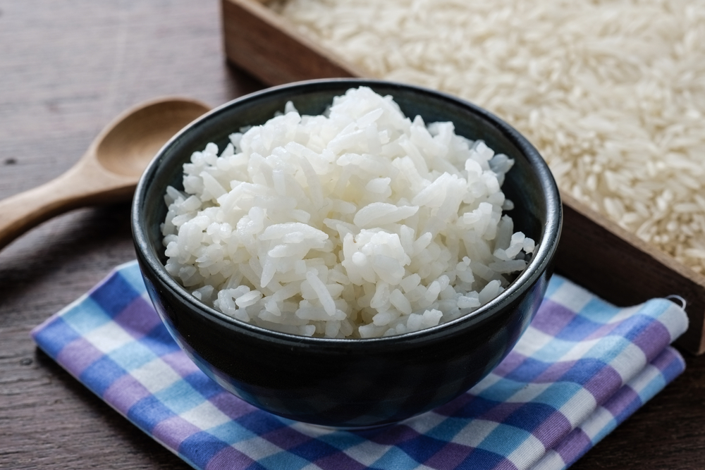

Rice

Description
This is how I make basmati rice in my rice cooker.
Ingredients
- 2 cups white basmati rice
- 2 tsp salt
- 4 cups water
Steps
-
Wash rice
-
Put rice, salt, and water in the rice cooker.
-
Put lid on the rice cooker and turn on the rice cooker.
The rice cooker will switch to "warm" mode automatically
once the rice is ready.